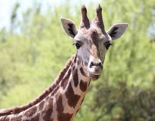
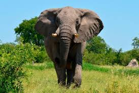
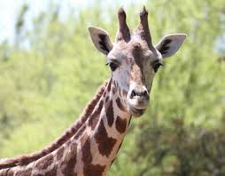
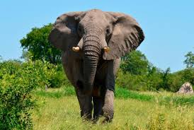

Turtles are reptiles of the order Testudines characterized by a special bony or cartilaginousshell developed from their ribs and acting as a shield. "Turtle" may refer to the order as a whole or to fresh-water and sea-dweling testudines. Zebras are several species of African equids united by their distinctive black and white striped coats. Their stripes come in different patterns, unique to each individual. They are generally social animals that live in small harems to large herds. The earless seals or true seals are one of the three main groups of mammals within the seal superfamily, Pinnipedia. All true seals are members of the family Phocidae The giant panda, also known as panda bear or simply panda, is a bear native to south central China. It is easily recognized by the large, distinctive black patches around its eyes, over the ears, and across its round body.Otters are carnivorous mammals in the subfamily Lutrinae. The 13 extant otter species are all semiaquatic, aquatic or marine, with diets based on fish and invertebrates.The koala is an arboreal herbivorous marsupial native to Australia. It is the only extant representative of the family Phascolarctidae and its closest living relatives are the wombats. The common hippopotamus, or hippo, is a large, mostly herbivorous mammal in sub-Saharan Africa, and one of only two extant species in the family Hippopotamidae, the other being the pygmy hippopotamusThe giraffe is a genus of African even-toed ungulate mammals, the tallest living terrestrial animals and the largest ruminants. The genus consists of eleven species including Giraffa camelopardalis, the type species.Flamingos or flamingoes are a type of wading bird in the family Phoenicopteridae, the only family in the order Phoenicopteriformes. There are four flamingo species in the Americas and two species in the Old World.Elephants are large mammals of the family Elephantidae and the order Proboscidea.A camel is an even-toed ungulate within the genus Camelus, bearing distinctive fatty deposits known as "humps" on its back.Bears are mammals of the family Ursidae. Bears are classified as caniforms, or doglike carnivorans, with the pinnipeds being their closest living relatives.Gorillas are ground-dwelling, predominantly herbivorous apes that inhabit the forests of central Africa. The eponymous genus Gorilla is divided into two species: the eastern gorillas and the western gorillas, and either four or five subspecies.A rhinoceros, often abbreviated to rhino, is one of any five extant species of odd-toed ungulates in the family Rhinocerotidae, as well as any of the numerous extinct species.The tiger is the largest cat species, most recognisable for their pattern of dark vertical stripes on reddish-orange fur with a lighter underside.The leopard is one of the five "big cats" in the genus Panthera. It is a member of the family Felidae with a wide range in sub-Saharan Africa and parts of Asia.
The kangaroo is a marsupial from the family Macropodidae. In common use the term is used to describe the largest species from this family, especially those of the genus Macropus.The lion is one of the big cats in the genus Panthera and a member of the family Felidae. The commonly used term African lion collectively denotes the several subspecies in Africa.

 


